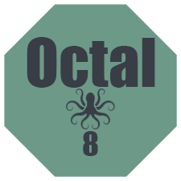

How does Octal encode works?
The octal numeral system, or oct for short, is the base-8 number system, and uses the digits 0 to 7, that is to say 10octal represents eight and 100octal represents sixty-four. However, English, like most languages, uses a base-10 number system, hence a true octal system might use different vocabulary. In the decimal system, each place is a power of ten. For example:In the octal system, each place is a power of eight. For example:
By performing the calculation above in the familiar decimal system, we see why 112 in octal is equal to 64+8+2=74 in decimal.